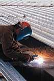

ОПАСНОСТИ ПРИ ЗАВАРЯВАНЕ

Заваряването свързва две парчета материал като ги нагорещява и/или ги притиска. Днес това става все по-сложен процес с голям избор от техники. Но тези нови техники са довели до много рискове за заварчиците: изгаряния, увреждания на очите, електрошокове и възможни експлозии и други кратки или продължителни здравословни проблеми, причинени от обгазяване. Последният проблем е особено остър с новите видове заварки, като такива с аргон, метален инертен газ, електронни лъчи, лазер и плазма.
ФИЗИЧЕСКИ ОПАСНОСТИ: ОЧНИ УВРЕЖДАНИЯ,
ИЗГАРЯНИЯ И ЕКСПЛОЗИИ |
- Ярката светлина от електрическата дъга има високо съдържание на ултравиолетова радиация, което може да предизвика болезнен конюнктивит, дори при кратко излагане. Това може да се предотврати чрез използването на шлем или каска снабдена с филтър.
- Подходящ екран е нужен, за да предпази околните.
- Прекаленото излагане на ултравиолетова радиация може да предизвика кожни изгаряния, затова лицето, врата и други открити части от тялото трябва да бъдат покрити.
- Високата температура може да предизвика дълбоки изгаряния, ако се концентрира в една точка от кожата.
- Ако заваряването се прави в близост до запалителни газове и течности има опасност от експлозия.
|